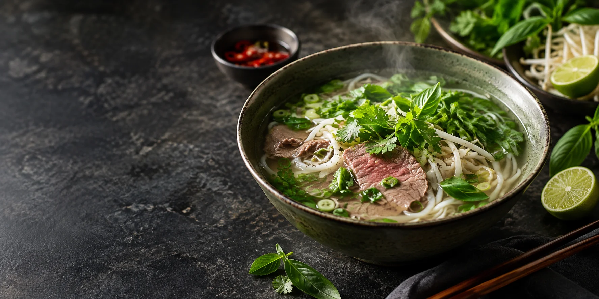
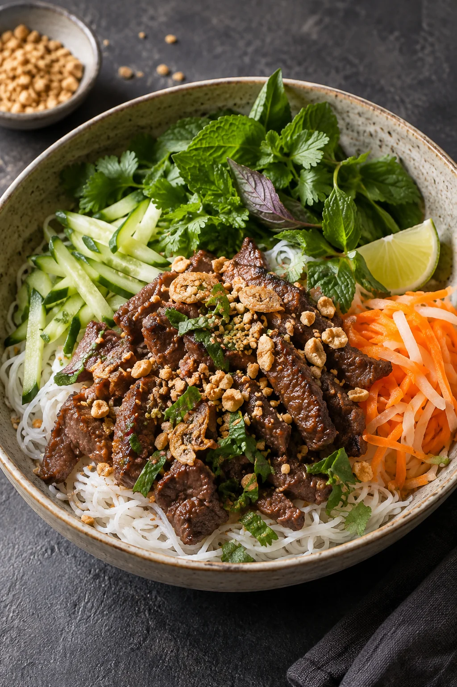
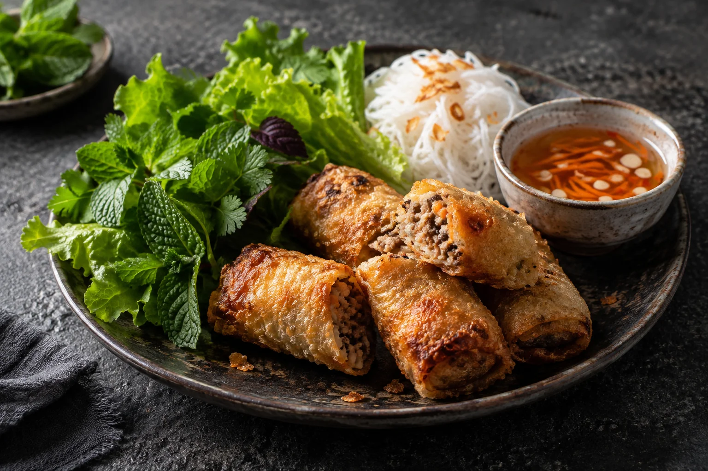
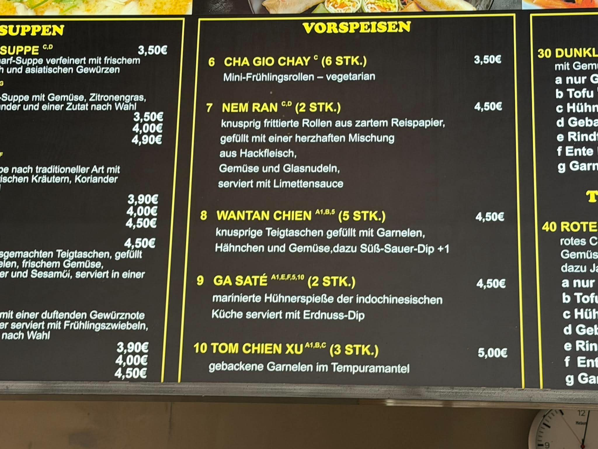

Vietnamesische Küche · Prenzlau
Ein Stück Saigon.
Hier bei uns.
Duftende Brühen, frische Kräuter und Gerichte, die man gern teilt.
Speiseaufnahme zur Illustration
Willkommen bei Saigon bowlPrenzlau, Brandenburg
Guter Geschmack
braucht Zeit.
Bei Saigon bowl treffen vietnamesische Klassiker auf die Vielfalt der asiatischen Küche. Suppen, Reisnudeln, Currys und Bowls stehen auf unserer Karte.
Unsere Karte ansehen
Einblicke
Auf den Geschmack kommen.


Besuchen Sie unsBis bald
Bis bald
in Prenzlau.
Wir freuen uns auf Ihren Besuch. Für eine Tischreservierung rufen Sie uns einfach an.
Tisch reservieren